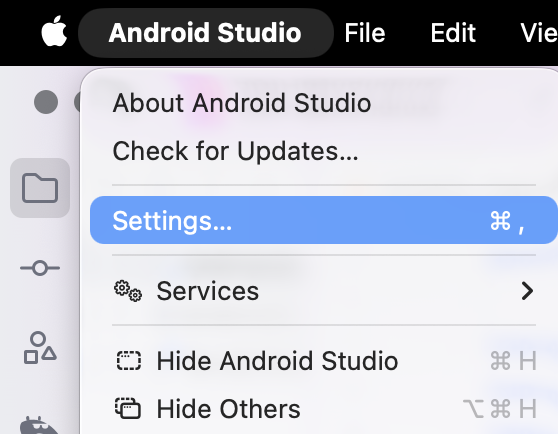
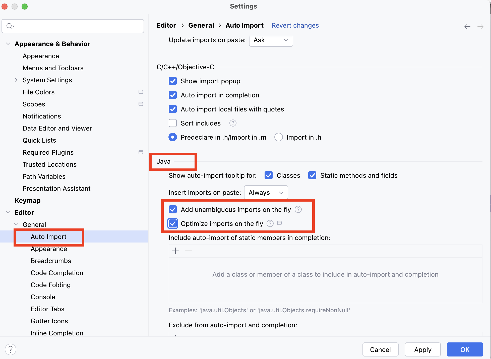

ANDROID PROGRAMMING 1 / 共通資料
Auto Importの設定
Javaを書く前に、必要なimport文をAndroid Studioが自動で追加するように設定します。
1. Settingsを開く
import（インポート）は、コードで使うクラスがどこにあるかを知らせる文です。授業では、Android Studioの Auto Import（自動インポート）を使います。
- Android Studioで授業のプロジェクトを開きます。
- 画面上部の Android Studio → Settings… をクリックします。

2. JavaのAuto Importを設定する
- Settingsの左側で Editor → General → Auto Import を選びます。
- 右側をスクロールし、Java の見出しを探します。
- Java欄を、次の表の設定にします。
| Java欄の項目 | 設定 | 何をする？ |
|---|---|---|
| Insert imports on paste | Always | コードを貼り付けたときに、必要なimport文を追加する。 |
| Add unambiguous imports on the fly | チェックを入れる | 候補が1つに決まるimport文を、入力に合わせて自動で追加する。 |
| Optimize imports on the fly | チェックを入れる | 使っていないimport文を削除するなど、自動で整理する。 |

- OK をクリックして、設定画面を閉じます。
成功の目印
Java欄で「Always」と2つのチェックを確認できた。これで教科書のJavaを入力する準備ができました。
3. 教科書のコードを入力する
教科書に戻り、そのステップのJavaを入力します。たとえば TextView や Button を使うと、必要なimport文がファイル上部へ追加されます。
import文は折りたたまれて見える場合があります。使わなくなったものは自動で整理されるので、行数が教材の見本と同じでなくても構いません。
4. 自動で追加されないとき
同じ名前のクラスが複数あると、自動では1つに決められません。名前に赤い下線が残った場合は、次の順に確認します。
- JavaのAuto Importが、上の表と同じ設定か確認します。
- 赤い下線のある名前にカーソルを置き、⌥ Option + Enter を押します。
- Import class が表示されたら選び、次の表にあるクラスを選びます。
| 教科書の名前 | 選ぶクラス |
|---|---|
| TextView | android.widget.TextView |
| Button | android.widget.Button |
| Log | android.util.Log |
| Toast | android.widget.Toast |
| Snackbar | com.google.android.material.snackbar.Snackbar |
候補が出ない場合や、表と同じクラスが見つからない場合は、先生に名前と画面を見せてください。
公式資料
JetBrains：Auto import（Android Studioの基盤となるIDEの説明）